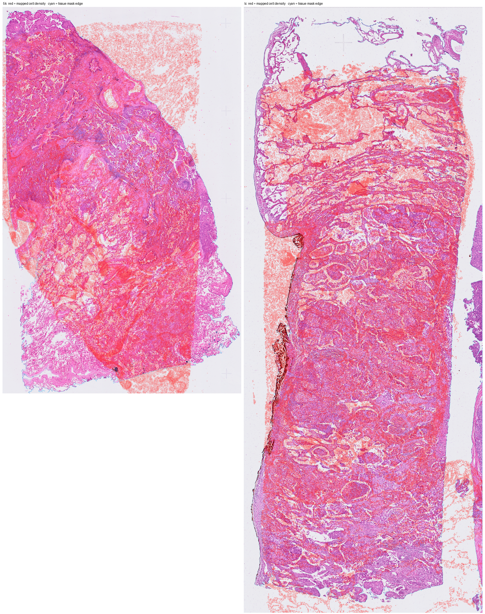
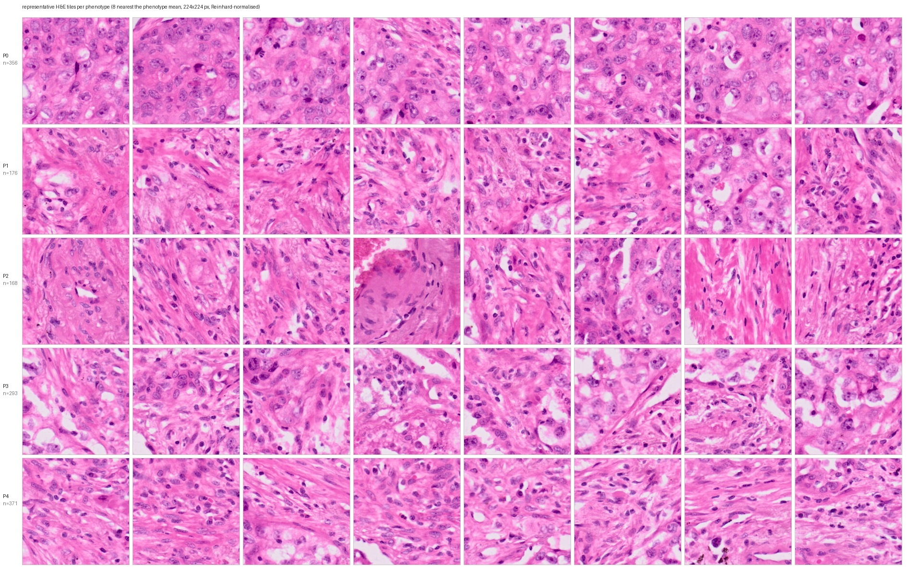

1. What this run does
Zhang et al., Genome Medicine 2025;17:98 tile H&E slides, cluster the tiles contrastively into 64 groups, correlate the cluster centroids, and merge them with a BIC-selected Gaussian mixture into ~15 histomorphological phenotypes. Every patient then becomes a vector of phenotype fractions. The imaging conventions here follow that paper's own code (ZhoulabCPH/HIPOS) — 224 px tiles, a tissue-coverage filter, Reinhard stain normalisation, a contrastively trained CNN — and the input contract follows GHIST+, which asks for an aligned H&E together with a nuclei mask and matched expression.
2. Getting the image onto the cells
The Xenium cell coordinates are in microns; the H&E is in pixels. 10&x ships he_imagealignment.csv for exactly this, and using it naively put the cells in the wrong place — its linear part implies 1.288 px/µm while the OME metadata on the same TIFF says 0.2738 µm/px, a factor 2.84 apart. Whichever one is believed, the translation term does not correspond.
So the transform was fixed from independent evidence, one component at a time:

3. Tiles, three modalities
| slide | tiles kept | tile px | µm/px | tile µm | cells in frame |
|---|---|---|---|---|---|
| 5k | 722 | 224 | 1.08 | 243 | 96.8% |
| lc | 1,364 | 224 | 0.50 | 112 | 94.5% |
Tiles are 224×224 at ~1 µm/px, non-overlapping, keeping only those with ≥60% stained tissue and ≥10 cells. Tissue is detected by colour, not darkness: Otsu on luminance rejected almost every tile because a tile that is entirely tissue still splits its own histogram near the middle.
What goes into a tile's feature vector
4. Results
| modalities | block dims | tiles | fine clusters | phenotypes |
|---|---|---|---|---|
| image + expression + annotation | 182 | 2086 | 64 | 5 |
| image only | 128 | 2086 | 64 | 4 |
| expression + annotation | 54 | 2086 | 64 | 8 |
| expression only | 32 | 2086 | 64 | 8 |
5k — representative tiles per phenotype

5k — where the units sit on the section

5k — composition

lc — the same three panels on the second slide


5. What the ablations say
The count is not the result and should not be read as one — G is whatever BIC picks on a 64×64 correlation matrix, and that quantity moves for reasons that have nothing to do with biology. What the ablation is for is the gallery: a phenotype that survives in the image-only run and in the expression-only run is one both modalities agree on. Read the panels, not the row counts.
The G upper bound is capped at 15. Left uncapped the BIC keeps improving as components are added, since 64 points in 64 dimensions can always be fitted better by more Gaussians — an early run picked 30 "phenotypes" for 2,086 tiles, which is curve fitting rather than structure.
6. What this does not show
- Two slides. 2,086 tiles from 5k and lc. HIPPO used 227,000 tiles from 209 patients. Nothing here supports a claim about a population, and no patient-level step is attempted. The third slide (luad) is still downloading.
- No survival endpoint. HIPPO validates its subtypes against overall and disease-free survival. These 10&x datasets ship no clinical follow-up, so the prognostic half of the paper is untestable with this data.
- The CNN is small and the data is small. 1.21 M parameters on 2,086 tiles, against a ResNet50 on 227,000. The contrastive loss fell from 4.08 to 0.85, so it learned something, but the image branch is the weakest part of this port and the ablation ordering should be read with that in mind.
- Reinhard normalisation is cross-slide, deliberately. The reference statistics come from the first slide and both are mapped onto it. Normalising each slide to itself would remove exactly the slide-to-slide differences the clustering is supposed to see.
7. Reproducing
python tools/fetch_10x_all.py # matrices + coordinates + H&E
python tools/register_final.py # rotation, scale, translation
python tools/extract_tiles.py --tag 5k # HIPPO-style tiling + three modalities
python tools/extract_tiles.py --tag lc
python tools/train_cnn.py --tiles work/5k_tiles.npz work/lc_tiles.npz \
--epochs 80 --clusters 64 --out work/cnn_tiles.npz
python tools/cluster_tiles.py --tags 5k lc --img --expr --ann --name fused
python tools/make_figures.py --name fused --tags 5k lc